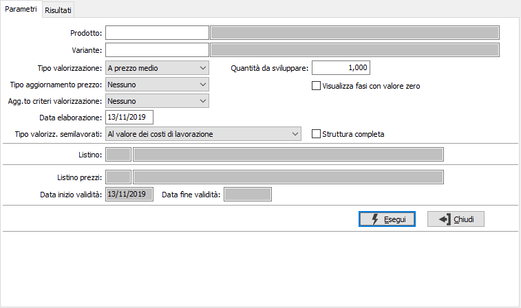
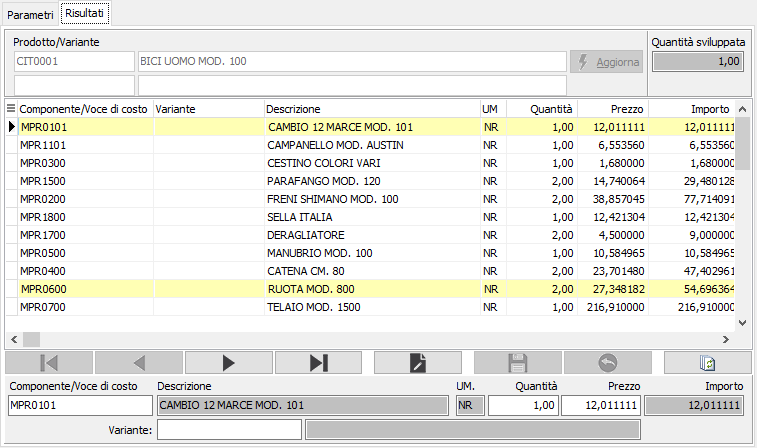

Valorizzazione manuale distinta
La procedura consente di effettuare la valorizzazione di una distinta base in relazione ai parametri richiesti, visualizzando il risultato in una griglia e rendendolo parzialmente modificabile prima di effettuare la stampa. Nel report vengono riportati i dati valorizzati in relazione al criterio scelto ed eventualmente modificati.
La finestra si articola su due pagine, una per l'inserimento dei parametri e l'atra per la visualizzazione del risultato, l'eventuale modifica e la stampa.
Parametri

PRODOTTO: codice dell'articolo, presente in anagrafica Prodotti, per cui si desidera effettuare la valorizzazione. Sul campo è attiva la ricerca (F9) sull’anagrafica prodotti.
TIPO VALORIZZAZIONE: definisce il metodo di valorizzazione del componente. Valori possibili:
Prezzo medio
Costo ultimo carico
Costo di mercato
Prezzo di vendita
Prezzo di listino
Come stabilito in distinta base
quantità da sviluppare: quantità di composto da utilizzare per il calcolo della valorizzazione.
VISUALIZZA FASI CON VALORE ZERO: Se spuntato mostrerà le fasi di lavorazione con valore zero.
TIPO AGGIORNAMENTO PREZZO: definisce il metodo di aggiornamento del prezzo del prodotto. Valori possibili:
Nessuno
Prezzo di vendita
Prezzo di listino
Prezzo di vendita e listino
Costo di mercato
AGGIORNAMENTO CRITERI VALORIZZAZIONE: definisce il metodo di aggiornamento dei criteri di valorizzazione, con quelli utilizzati nella valorizzazione. Valori possibili:
Nessuno
Aggiorna i criteri presenti nei componenti della distinta
Aggiorna i criteri presenti nei dettagli delle disposizioni (se presente la produzione)
Aggiorna componenti e dettagli disposizioni
DATA ELABORAZIONE: data dell'elaborazione, viene proposta la data di sistema. Nel caso di gestione delle date di validità sarà utilizzata come data di riferimento per la distinta base.
TIPO VALORIZZAZIONE SEMILAVORATI: Definisce il metodo di calcolo del prezzo per i semilavorati; utilizzato in prima nota di magazzino, valorizzazione magazzino e procedure di produzione per determinare il valore di un semilavorato. Valori possibili:
Standard: utilizza il tipo di calcolo definito in distinta base
Al valore delle materie prime: utilizza come prezzo il valore derivante dalla somma dei costi dei componenti.
Al valore dei costi di lavorazione: utilizza come prezzo il valore dalla somma dei costi dei componenti aumentato dei costi di lavorazione.
Al valore dei costi di produzione: utilizza come prezzo il valore dalla somma dei costi dei componenti aumentato dei costi di lavorazione e dei costi di produzione.
STRUTTURA COMPLETA: attivo solo per valorizzazioni di tipo non standard, consente di aggiungere la visualizzazione e la stampa dei componenti dei semilavorati valorizzati (casella con segno di spunta).
LAVORANTE: eventuale codice del lavorante da utilizzare per l'assegnazione delle lavorazioni. Il campo è presente solo se è stata attivata la gestione del lavorante sulla scheda di lavorazione in configurazione. Sul campo sono attive le funzioni di ricerca (F9) sulla tabella lavoranti.
In relazione a quanto inserito possono essere attivati anche i seguenti parametri:
LISTINO: codice del listino prezzi da utilizzare per ricercare il costo del componente. Sul campo sono attive le funzioni di ricerca (F9) sulla tabella listini.
LISTINO PREZZI: codice del listino prezzi da utilizzare per aggiornare il prezzo del prodotto. Sul campo sono attive le funzioni di ricerca (F9) sulla tabella listini.
DATA INIZIO VALIDITÀ: definisce la data di inizio validità da utilizzare per l'aggiornamento del prezzo del prodotto sull listino.
DATA FINE VALIDITÀ: definisce la data di fine validità da utilizzare per l'aggiornamento del prezzo del prodotto sull listino.
Risultati
Il risultato dell'elaborazione viene visualizzato in questa pagina, da dove è possibile intervenire direttamente sui dati elaborati.

In questa sezione vengono visualizzati tutti gli elementi che concorrono a valorizzare il prodotto; i componenti, le eventuali lavorazioni derivanti da una scheda di lavorazione ed i costi di produzione eventualmente associati. Per ogni riga vengono visualizzati il codice del componente, la descrizione, del componente, della lavorazione o della voce di costo, il prezzo unitario, la quantità e l'importo.
Non è possibile inserire o cancellare i dati risultato dell'elaborazione, ma è tuttavia possibile modificare il prezzo dei singoli componenti e, nel caso di componente variabile con gestione delle distinte neutre, modificare il codice del componente stesso ed eventualmente anche la quantità.
Nel caso siano apportate delle variazioni i dati sottostanti saranno riallineati in tempo reale automaticamente.
Nel caso si sia optato per l'aggiornamento del prezzo del prodotto oppure dei criteri di valorizzazione sarà abilitato il pulsante Aggiorna, che se premuto effettuerà l'aggiornamento con il prezzo di vendita derivante dall'elaborazione corrente e dalle eventuali variazioni apportate e/o dei criteri di valorizzazione adottati. Sulla toolbar sono disponibili i tasti di Stampa ed Anteprima per effettuare la stampa del report.